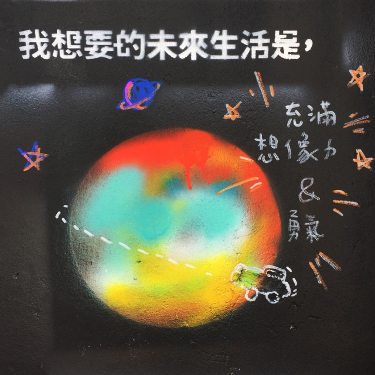

Talking Wall
I Want My Future Life To Be
A way to communicate the topics that are related to the individual and the social between people, and citizen and government.
Participate In
Talking Wall - I Want My Future Life To Be is a co-reframing project aimed to rethink the future life by co-recreating the wall with the topic that is an interwoven issue from individual to social.
We are currently inviting people to join in this project to directly change the environment that forms parts of our behaviours and minds.
Want to participate in? Here is what you can do:
Co-Building Event


On 3rd November 2018, we held our first co-building event in Taiwan. The first wall is located in the legal graffiti area in the south district in Taichung. The co-building event is about sharing skills and perspectives into the real world.
MoreHow to participate in
Co-create a more accessible and inclusive way to communicate the topics that are related to the individual and the social between people, and citizen and government.
Future Life
Future life on the wall presented the different perspectives and imagination of the future life from different cultures.
- 